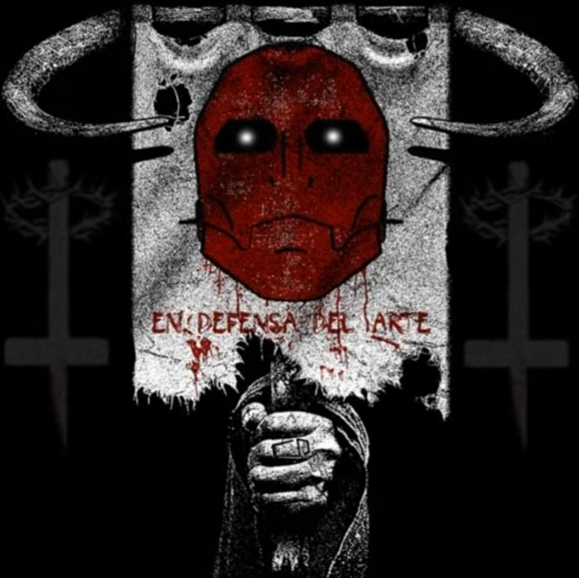

EN DEFENSA DEL ARTE
Es una macro obra lanzada de forma progresiva desde el 24 de junio del 2021 hasta el 11 de noviembre del mismo año.
Es una macro obra lanzada de forma progresiva desde el 24 de junio del 2021 hasta el 11 de noviembre del mismo año.
Compuesta por siete partes que, sumando una introducción, hacen un total de ocho secciones. En el cual el artista aborda muchos temas relacionados con el arte y su manera de como interpretarlo correctamente según su punto de vista.
